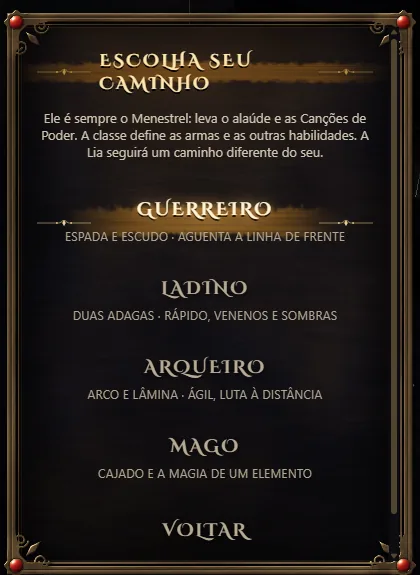
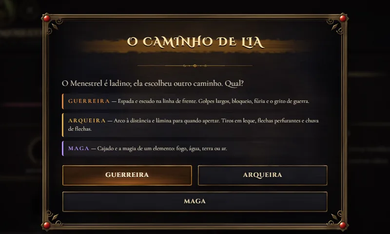
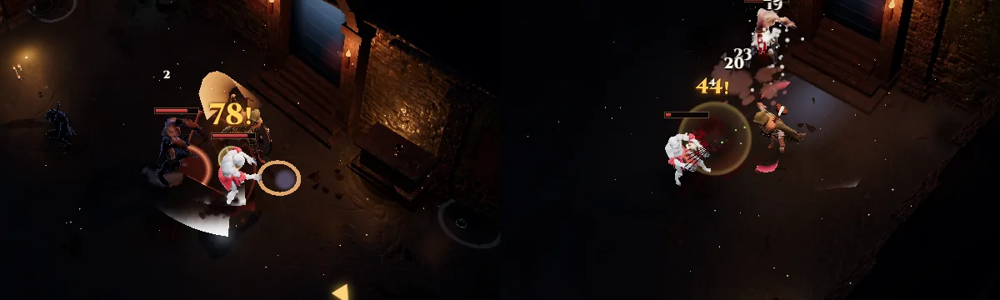
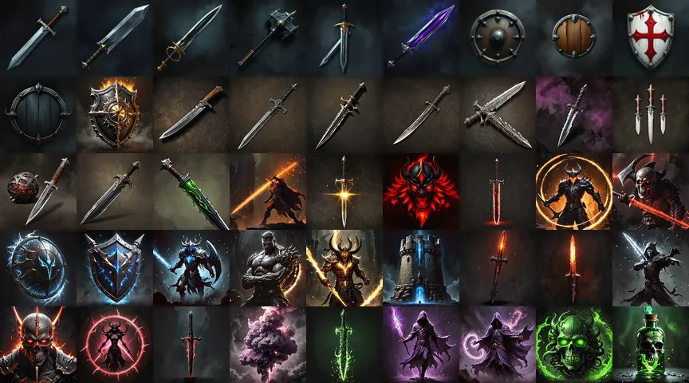

Agora são quatro caminhos no jogo novo: Guerreiro, Ladino, Arqueiro e Mago. O Menestrel continua sempre Menestrel, com o alaúde e as Canções de Poder em qualquer classe. A classe define as armas e as outras habilidades. A Lia, ao entrar no grupo, escolhe uma das três classes que ele não segue.

A escolha no jogo novo.

A Lia escolhe um caminho diferente do seu.
Guerreiro
Espada (ou maça) e escudo. Combo de três golpes largos que termina num ataque forte. Cada escudo tem chance de bloqueio, e o bloqueio tira 70% do dano.
ARMAS: Fender, Mestre de Armas, Fúria, Feridas Profundas (sangramento), Tempestade de Aço e Carrasco. ESCUDO: Golpe de Escudo (atordoa), Guarda Alta, Investida de Escudo, Pele de Ferro, Grito de Guerra (atordoa em volta e dá dano ao grupo) e Fortaleza.
Ladino
Adaga e punhal, um em cada mão: golpes muito rápidos e estocadas.
ADAGAS: Apunhalar (o dobro pelas costas ou num atordoado), Precisão, Leque de Facas, Letalidade, Dança das Lâminas e Degolador. SOMBRAS: Bomba de Fumaça, Peçonha (veneno), Passo Sombrio (reaparece atrás do alvo), Evasão, Nuvem Tóxica e Virulência.

Fender do guerreiro e Dança das Lâminas do ladino.
Armas e ícones novos
São 21 bases novas: 6 armas de guerreiro, 5 escudos, 6 adagas e 4 punhais. As armas são modelos 3D de verdade, feitos de armas medievais fotoescaneadas (Poly Haven, CC0), e os escudos foram modelados no Blender. O metal brilha na cor da raridade. Armaduras de couro e malha servem a guerreiro, ladino e arqueiro.

Os 45 ícones novos.
Também
Queimadura, sangramento e veneno agora tiram vida de verdade a cada meio segundo; antes, a queimadura do fogo era só registrada. As animações novas vêm da Universal Animation Library (Quaternius, CC0), convertidas para o Menestrel e para a Lia.
Em preparação: animações novas para o mago (pose, jeito de lançar e cajado).